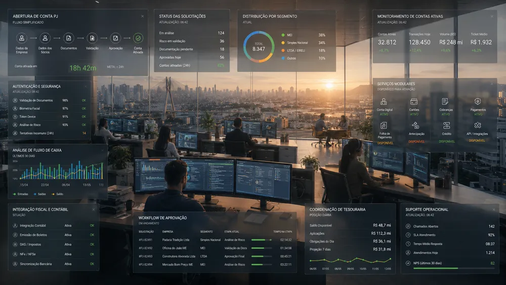

Conta JurÃdica
BMG
Conta digital para pequenas empresas, autônomos e microempreendedores, estruturada para reduzir burocracia sem perder segurança e conformidade regulatória. Digital business account for small companies, freelancers, and microentrepreneurs, structured to reduce bureaucracy without losing security and compliance.
Simplicidade para
empresas pequenas.
Simplicity for
small businesses.
O projeto estruturou uma conta digital para diferentes perfis de Pessoa JurÃdica, de empreendedores individuais a pequenas empresas com operação mais complexa. The project structured a digital account for different business profiles, from individual entrepreneurs to small companies with more complex operations.
Pequenas empresas não são versões menores de grandes empresas. Small businesses are not smaller versions of large companies.
Existem quatro segmentos principais de Pessoa JurÃdica que demandam serviços financeiros distintos: Pessoa FÃsica Empreendedor, MEI, Simples Nacional e LTDA. There are four primary business segments demanding distinct financial services: Individual Entrepreneur, MEI, Simples Nacional, and LTDA.
Cada segmento opera sob condições financeiras e fiscais muito especÃficas. O PF Empreendedor precisa apenas formalizar renda e movimentar valores básicos. O MEI precisa de integração com guias de impostos e guias DAS. Empresas do Simples Nacional dependem de relatórios exportáveis para o contador, enquanto LTDAs exigem controle de fluxo de caixa complexo e múltiplos usuários com permissões diferenciadas.
Each segment operates under very specific financial and tax conditions. Individual Entrepreneurs only need to formalize income and move basic amounts. MEIs need integration with tax slips and DAS slips. Simples Nacional companies depend on exportable reports for their accountant, while LTDAs require complex cash-flow control and multi-users with differentiated permissions.
- Pessoa FÃsica EmpreendedorIndividual Entrepreneur (PFE)
- Microempreendedor IndividualMicroentrepreneur (MEI)
- Empresa Simples (Simples Nac.)Simples Nacional Tax-regime
- Pequena e Média EmpresaSmall & Medium Business (LTDA)
O sistema bancário tradicional trata pequenas empresas como se fossem grandes. Traditional banking treats small businesses like corporate giants.
Documentação excessiva, presença fÃsica em agências e processamento manual causavam semanas de atraso para liberar uma conta PJ. Excessive documentation, branch visits, and manual contract processing caused weeks of delay to approve a business account.
A falta de canais digitais adaptados fazia com que o pequeno empreendedor ficasse travado na triagem inicial de conformidade (compliance). Sem flexibilidade na exigência de documentos, um pequeno salão de beleza ou oficina mecânica era submetido às mesmas checagens pesadas de uma grande sociedade limitada, gerando abandono no fluxo.
The lack of tailored digital channels meant small business owners got stuck at the initial compliance check. Without document flexibility, a small hair salon or auto shop went through the same heavy checks as a large limited company, generating drop-offs.
- Presença fÃsica exigidaPhysical presence required
- Processamento manual de contratosManual contract processing
- Exigência genérica de documentosGeneric document demands
- Abandono de fluxo na triagemFlow abandonment during screening
Segurança, conformidade e velocidade competiam no mesmo fluxo. Security, compliance, and speed competed in the same flow.
O desafio central era simplificar a abertura e a gestão financeira da conta digital sem comprometer os requisitos regulatórios rÃgidos do Banco Central. The core challenge was simplifying account opening and financial management without compromising strict Central Bank regulatory requirements.
Um fluxo excessivamente simples de abertura comprometeria as checagens anti-fraude e de KYC (Know Your Customer). Por outro lado, manter as mesmas exigências inviabilizaria a conversão de clientes menores, gerando abandono massivo. Era preciso estruturar uma experiência adaptativa que conciliasse a velocidade que o cliente deseja com o controle que o banco exige.
A flow that was too simple would compromise anti-fraud and KYC checks. On the other hand, maintaining the same demands would ruin small customer conversion, leading to massive drop-offs. We needed to structure an adaptive experience balancing user speed with bank compliance.
Facilitação de discovery, workshops e design conceitual. Discovery facilitation, workshops, and conceptual design.
Atuei como Product Designer responsável pela estruturação do projeto, facilitação do workshop de stakeholders com 20 participantes (POs, engenheiros, gerentes) e sÃntese das descobertas. Liderei a definição dos fluxos de cadastro progressivo e colaborei com a equipe de UX/PO no detalhamento das interfaces. I worked as Product Designer responsible for structuring the project, facilitating the stakeholder workshop with 20 participants (POs, engineers, managers) and synthesizing findings. I led the definition of progressive onboarding flows and collaborated with the UX/PO team on detailing interfaces.
Facilitação do workshop.Workshop facilitation.
Reuni stakeholders internos e facilitei dinâmicas de Matriz CSD e mapeamento de jornadas de clientes.Brought together internal stakeholders and facilitated CSD Matrix exercises and customer journey mapping.
Abertura sequenciada de conta.Sequenced account opening.
Desenhei um fluxo de cadastro progressivo que pede documentos aos poucos, reduzindo a sobrecarga inicial.Designed a progressive onboarding flow asking for documents gradually, reducing initial friction.
Conta base universal.Universal base account.
Defini a structure comum de serviços básicos, ocultando recursos complexos sob ativação modular.Defined the shared baseline structure of basic services, hiding complex features under modular activation.
Interface progressiva adaptativa.Adaptive progressive interface.
Estruturei a home e navegação para se adaptar visualmente ao segmento do cliente logado.Structured the home page and navigation to adapt visually based on the logged-in client segment.
Integração de segurança nativa.Native security integration.
Desenhei a transição invisÃvel de tokens de transação e validações biométricas no fluxo móvel.Designed the invisible transition of transaction tokens and biometric validations in the mobile flow.
Atendimento no aplicativo.In-app support integration.
Integrei o contato com especialistas dedicados por segmento diretamente na barra de navegação da conta.Integrated dedicated specialist support by segment directly into the account's navigation bar.
Conformidade regulatória bancária e controles de fraude. Banking regulatory compliance and fraud controls.
- Regulações do BACEN: Obrigatoriedade de checagens rigorosas de KYC, auditoria de dados e regras de PLD (Lavagem de Dinheiro). BACEN regulations: Mandatory checks for KYC, audit logs, and AML (Anti-Money Laundering) rules.
- Maturidade Digital do Cliente: A interface precisava ser extremamente simples e acessÃvel para quem não tem familiaridade com gestão financeira. Client digital maturity: The interface had to be extremely simple and accessible to users unfamiliar with financial management.
- Modularidade Técnica: Flexibilidade da infraestrutura de backend para ativar ou desativar recursos conforme o segmento da empresa. Technical modularity: Backend infrastructure flexibility to activate or deactivate features based on the business segment.
- Segurança Transacional: Garantia de integridade em pagamentos de altos valores, faturamento de maquininhas e transferências (TED/Pix). Transactional security: Ensuring integrity in high-value payments, card terminal billing, and transfers.
Arquitetura em camadas e serviços modulares. Layered architecture and modular services.
A grande decisão estrutural foi pensar a conta PJ em camadas modulares. Todos começam com um fluxo rápido e uma conta base, ativando serviços especÃficos conforme o crescimento do negócio. The major structural decision was designing the business account in modular layers. Everyone starts with a fast onboarding and a base account, activating specific services as the business grows.
Telas e walkthrough da conta digital e fluxos de segurança. Screens and walkthrough of the digital account and security flows.
Abaixo, a sequência de interfaces de usuário que estruturam o gerenciamento financeiro diário e o fluxo de login seguro. Below, the sequence of user interfaces structuring daily financial management and the secure login flow.

Home de Conta e Visão Geral Account Home and Overview
Interface limpa apresentando saldo, atalhos rápidos de transação e visão consolidada de faturamento de cartões e recebÃveis para pequenas empresas.
Clean interface displaying balance, transaction quick actions, and a consolidated view of card billing and receivables for small businesses.


Fluxo de boas-vindas da conta digital (à esquerda) e a validação integrada por biometria facial / FaceID (à direita) durante o login para maior segurança.
Digital account welcome flow (left) and integrated facial biometrics / FaceID validation (right) during login for increased security.

Extrato Estruturado de Conta Structured Account Statement
Tela de extrato de conta detalhado com filtros por tipo de operação, facilitando a identificação de entradas e saÃdas e a conciliação bancária.
Detailed account statement screen with operation filters, facilitating identification of inflows and outflows and bank reconciliation.


Módulos de pagamento de contas e boletos (à esquerda) e de transferências eletrônicas (à direita) integrados de forma intuitiva no fluxo móvel.
Bill payment modules (left) and electronic transfers (right) intuitively integrated in the mobile flow.

Painel de Faturamento e BMG Granito Billing Board and BMG Granito
Módulo especializado de gestão do faturamento corporativo e acompanhamento de recebÃveis integrados originados na maquininha de cartão Granito.
Specialized management module for corporate billing and integrated receivables tracking from the Granito card terminal.
Fronteiras de integração e legados regulatórios. Integration boundaries and regulatory legacies.
A sincronização imediata de dados com a contabilidade externa ainda esbarrou na diversidade de softwares dos clientes. Immediate data synchronization with external accounting still faced challenges due to the diversity of client software.
Embora a conta base e os relatórios exportáveis tenham sido entregues de imediato, a integração direta via API com sistemas contábeis terceirizados variados precisou ser tratada por meio de parcerias especÃficas com grandes ERPs do mercado. O fluxo de análise cadastral automática permaneceu dependendo de um revisor humano de compliance em casos de divergência de contratos sociais complexos de LTDAs.
Although the base account and exportable reports were delivered immediately, direct API integration with varied third-party accounting systems had to be handled via specific partnerships with major ERPs. Automatic registration analysis still required a human compliance reviewer in case of discrepancies in complex corporate social contracts.
Resultados na inclusão financeira de pequenos negócios. Results in small business financial inclusion.
A simplificação regulada da conta PJ removeu a fricção de abertura e aumentou a retenção do empreendedor. The regulated simplification of the business account removed opening friction and increased owner retention.
Alinhados em um workshop colaborativo de definição conceitual de jornada (POs, DEV, OPS). Aligned in a collaborative workshop defining the conceptual customer journey (POs, DEV, OPS).
Tempo médio para abertura e ativação completa da conta PJ (reduzido de semanas). Average time for complete business account opening and activation (reduced from weeks).
De empresas atendidos por meio de uma interface adaptativa progressiva. Of businesses served through a progressive adaptive interface.
Aderência às normas de KYC, compliance e PLD do Banco Central. Compliance with BACEN rules for KYC, auditing, and AML.
Simplicidade em ambiente regulado é sequenciamento. Simplicity in a regulated environment is sequencing.
O maior aprendizado foi ver que, em produtos bancários ou altamente regulados, simplificar não significa remover etapas ou esconder a segurança. Significa organizar com inteligência o momento em que cada informação é solicitada e como as transações são validadas de forma fluida. Quando o produto respeita o ritmo do usuário, a burocracia é percebida como cuidado, e não como obstáculo. The biggest learning was seeing that, in banking or highly regulated products, simplifying does not mean removing steps or hiding security. It means intelligently organizing when information is requested and how transactions are validated fluidly. When the product respects the user's pace, bureaucracy is perceived as care, not an obstacle.